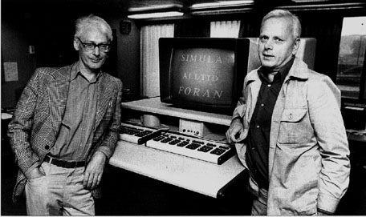

Paradigma de Programación Orientada a Objectos
Historia
La programación orientada a objetos (POO) nace en los años 60's en el Norwegian Computing Center (NCC) en la implementación de Simula I por Kristen Nygaard y Ole Johan Dahl.

Evolución

Filosofía y Principios
POO es la implementación del pensamiento orientado a objetos en la programación.
POO nos dice:
- Pensar en el propósito general del programa como un todo antes de subdividir este.
- Dar prioridad a los objetos y no a la funcionalidad.

SOLID: Acrónimo memotécnico para los cinco principios de la programación y el diseño orientado a objetos nombrados por Robert C. Martin.
- Principio de una sola responsabilidad
- Principio abierto/cerrado
- Principio de sustitución Liskov
- Principio de segregación de interfaz
- Principio de Inversión de dependencia
Ventajas
 Reutilización de código
Reutilización de código
- Rápido desarrollo.
- Alta calidad del código.
- Bajo costo en fases de desarrollo.
- Encapsulamiento
- Beneficios de diseño
- Mantenimiento de Software
- Documentación
Reutilización de código
- Rápido desarrollo.
- Alta calidad del código.
- Bajo costo en fases de desarrollo.
EncapsulamientoBeneficios de diseñoMantenimiento de SoftwareDocumentaciónDesventajas
 Tiempo en fase de diseño
Tiempo en fase de diseño- Curva de aprendizaje
- Tamaño del programa
- Velocidad de ejecución
Lenguajes de programación
- C++
- Objective-C
- Java
- Smalltalk
- Ruby
- Python
- ActionScript
- C#
- PHP*
- Delphi
Aplicaciones
- Bases de datos orientadas a objetos:
La información es representada en forma de objetos.
- Modelamiento y simulación de agentes:
Los agentes son modelados como objetos.
- Diseño de interfaz de usuario:
Cada elemento de la interfaz es un objeto relacionado con otros.
La información es representada en forma de objetos.
Los agentes son modelados como objetos.
Cada elemento de la interfaz es un objeto relacionado con otros.